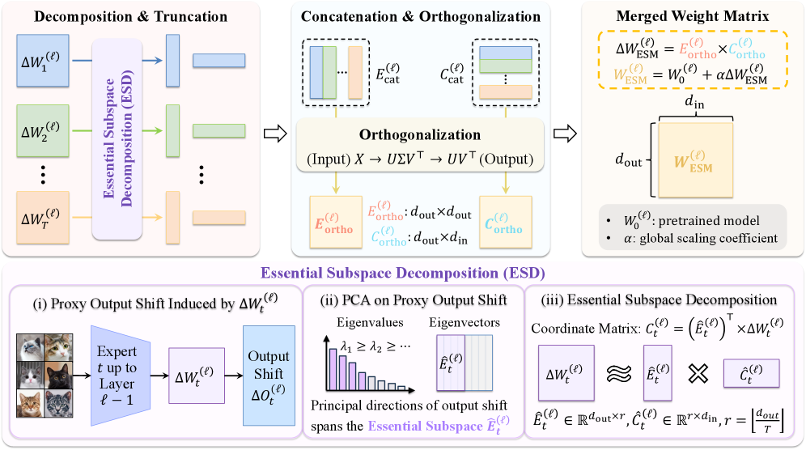

Figure 2 : Overview of the proposed framework: a context window from the QAPPD dataset (three of 15 variates shown) is mapped during inference to a starting point on the target spa...
随着同一底座模型被分别微调成多个专家模型，如何把这些专家重新合并成单一多任务模型，已经成为比从头多任务训练更实际的工程问题。现有 model merging 方法很多依赖参数相加、稀疏裁剪或启发式冲突消解，但任务之间的更新很容易互相污染，尤其当任务数增加时更明显。
核心问题
如果多个任务微调模型都来自同一个 base model，怎样才能保留各任务真正起作用的功能更新，同时抑制那些单看能量不大、但跨任务叠加后会造成严重干扰的参数方向？
对当前主题的关键意义在于：如果你后面有“一个底座 + 多个任务专家”的科学工作流，例如不同诊断任务、不同预测头或不同实验模态专家，这篇方法很适合当成低成本多任务整合路线，而不必每次都重新多任务训练一个大模型。
方法与关键创新

Figure 2: Overview of ESM, the proposed static training-free model merging method. For each task update, Essential Subspace Decomposition (ESD) first extracts output shift-aware ba...
Figure 10 : Nemenyi statistical test results for fine-grained retrieval. Black horizontal lines indicate the critical distance (CD), grouping models with no significant performance...
作者提出 FG-BMK，构建了包含 1.01 million 个问题和 0.28 million 张图像的综合细粒度评测框架，同时覆盖 human-oriented 的语义识别问答与 machine-oriented 的视觉可分性分析。它不是只输出一个排行榜，而是沿着“能否识别更细类别、失败卡在何处、训练设计如何影响、在视觉/语言扰动下是否稳健”这条诊断路径系统分析 LVLM。
Figure 1 : The OmniAgent Framework for Native Active Perception. Unlike passive methods that process video frames uniformly, OmniAgent treats perception as an iterative reasoning p...
Figure 2: Schematic overview of the architecture families used in this study. Two-dimensional convolutional and transformer models operate on latitude–longitude structure while sta...
论文发现，在平流层动力学相对安静的 regime 下，不同模型差异并不大；但一旦进入 SSW-enabled 场景，性能差距会明显拉开，显式建模三维垂向耦合的 3D U-Net 和 3D global transformer 在平流层指标上表现最好。与此同时，EP-flux 诊断显示，即便点预测误差已经不高，模型仍可能在波驱动结构上保留连贯误差，说明“低误差”与“物理忠实”并不等价。

![Figure 2: Schematic overview of the architecture families used in this study. Two-dimensional convolutional and transformer models operate on latitude–longitude structure while stacking pressure levels and variables in the channel dimension, whereas three-dimensional variants act directly across latitude, longitude, and pressure and therefore encode explicit vertical coupling. Graph-based models represent the atmosphere on either a spherical grid graph or a spherical mesh while stacking pressure levels and variables in the node features.](../assets/figures/affe370cdda7901c.png)